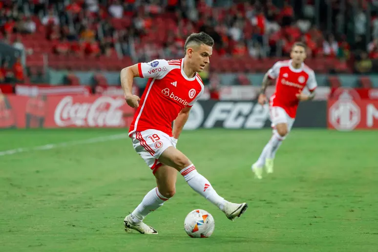
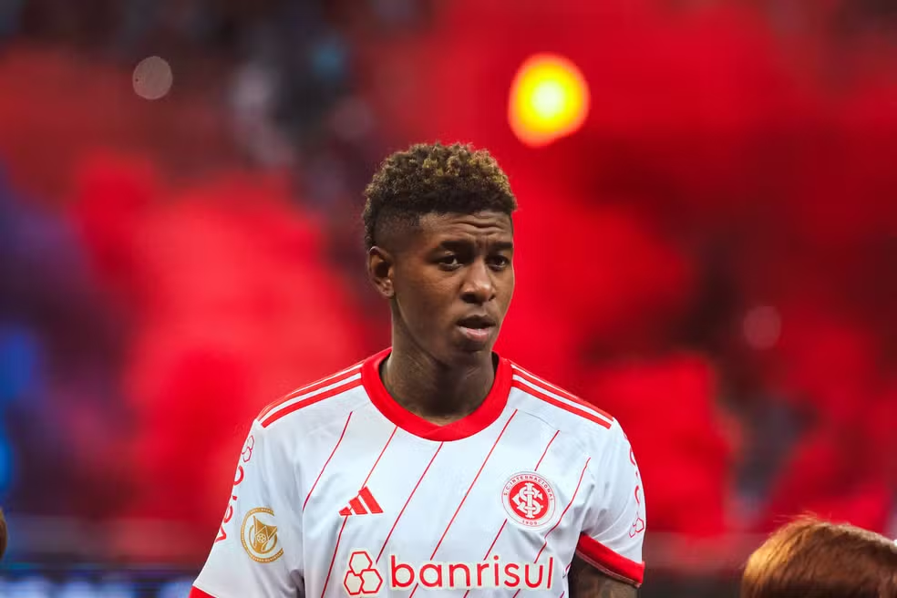
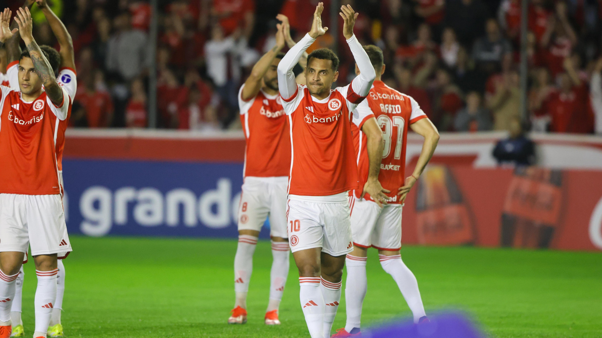
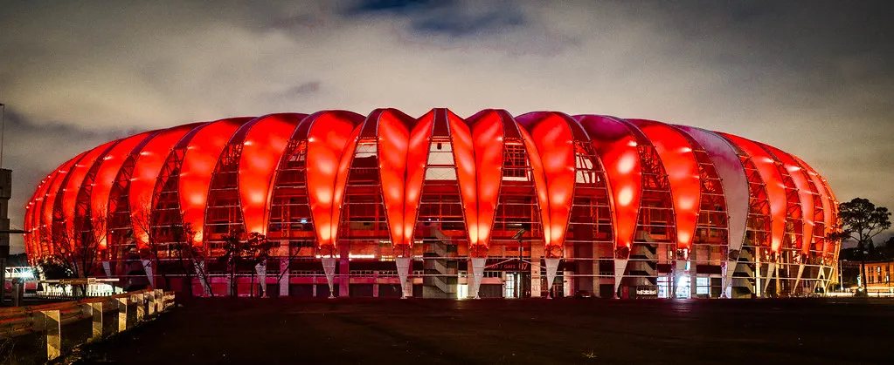

NOTÍCIAS
O Sport Club Internacional tem enfrentado uma fase movimentada tanto dentro quanto fora de campo. Aqui estão algumas das principais notícias recentes sobre o clube.
Próximos Jogos e Desafios
O Internacional está se preparando para uma série de jogos importantes pelo Campeonato Brasileiro e pela Copa Sul-Americana. Nas próximas semanas, o time enfrentará adversários como Corinthians, Grêmio, Atlético-MG, Criciúma e Vasco no Brasileirão. As partidas estão sendo disputadas em locais alternativos devido às enchentes que afetaram o Beira-Rio, com expectativa de retorno ao estádio em julho.
Mercado da Bola
No mercado de transferências, o Inter está buscando reforçar sua defesa com a possível contratação de Carlos Salcedo. Ao mesmo tempo, o clube enfrenta o risco de perder o zagueiro Vitão, que atrai interesse de clubes europeus como West Ham e Real Betis. Outro jogador que pode deixar o Beira-Rio é Fabrício Bustos, que está na mira do Villarreal, embora a diretoria do Inter esteja trabalhando para renovar seu contrato.
Desempenho no Campeonato
Mesmo com as adversidades recentes, o Internacional tem mostrado evolução na temporada, segundo o jogador Hyoran. O clube busca manter o bom desempenho nas competições, apesar das dificuldades causadas pelas enchentes e das indefinições sobre os locais das partidas.
Retorno ao Beira-Rio
A recuperação do estádio Beira-Rio está em andamento, com planos de reabertura em julho. Enquanto isso, o clube tem utilizado outros estádios para seus jogos como mandante, adaptando-se às condições adversas e garantindo a continuidade das competições.
